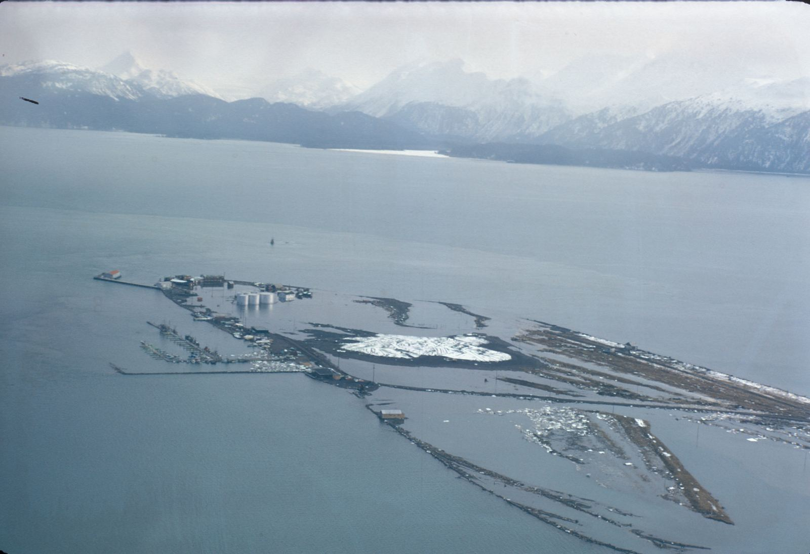
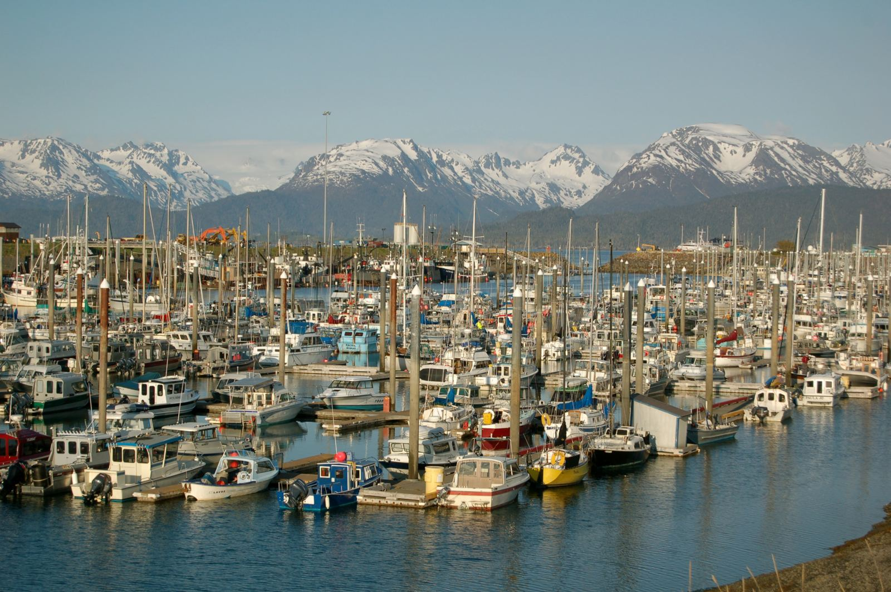

Directory / Southcentral Alaska / Homer, AK
Homer tides — Homer Spit & Kachemak Bay
High and low tides for the coming week from NOAA station 9455558 (Coal Point, Kachemak Bay — 59.6014, -151.4106), at the end of the Homer Spit by the small boat harbor. Times are local (AKST/AKDT). Heights are feet above Mean Lower Low Water (MLLW). Homer sits at the end of the Sterling Highway, where the 4.5-mile Spit reaches into Kachemak Bay — home port for a big halibut charter fleet, Cook Inlet salmon and halibut boats, and the city fish dock.
Big water: Kachemak Bay tide range
Homer has some of the biggest tides of any port on this site. In the NOAA predictions fetched 2026-11-08, the largest swing in the next five weeks comes on Wednesday, November 25, 2026: a 22.6 ft high at 2:18 PM followed by a −4.9 ft low at 8:54 PM, a drop of about 27.5 ft in under seven hours.
This week (Nov 9–12), the evening lows are minus tides (−2.2 ft Mon 8:27 PM down to −0.2 ft Thu 10:11 PM). Through mid-December, none of the predicted minus tides fall between 9 AM and 4 PM, so plan beach walks and tideflat work with a headlamp and keep an eye on the incoming tide.
Computed from NOAA CO-OPS hi/lo predictions for 9455558 (2026-11-09 through 2026-12-16), fetched 2026-11-08 21:00 AKST. Not for navigation.
The Spit then & now
Historic


Current


Official NOAA predictions Station home NOAA chart viewer View on Windy
Port Sponsor — Homer, AK
Top placement for fuel docks, marinas, yards, and marine businesses.
$25–$50 / month
Monday, November 9, 2026
| Tide | Time (local) | Height (MLLW) |
|---|---|---|
| High | 2:19 AM | 18.8 ft |
| Low | 7:58 AM | 2.9 ft |
| High | 2:02 PM | 20.6 ft |
| Low | 8:27 PM | -2.2 ft |
Tuesday, November 10, 2026
| Tide | Time (local) | Height (MLLW) |
|---|---|---|
| High | 2:54 AM | 18.5 ft |
| Low | 8:32 AM | 3.5 ft |
| High | 2:33 PM | 20.1 ft |
| Low | 9:00 PM | -1.9 ft |
Wednesday, November 11, 2026
| Tide | Time (local) | Height (MLLW) |
|---|---|---|
| High | 3:28 AM | 18.0 ft |
| Low | 9:05 AM | 4.2 ft |
| High | 3:03 PM | 19.5 ft |
| Low | 9:35 PM | -1.2 ft |
Thursday, November 12, 2026
| Tide | Time (local) | Height (MLLW) |
|---|---|---|
| High | 4:02 AM | 17.2 ft |
| Low | 9:40 AM | 5.0 ft |
| High | 3:35 PM | 18.7 ft |
| Low | 10:11 PM | -0.2 ft |
Friday, November 13, 2026
| Tide | Time (local) | Height (MLLW) |
|---|---|---|
| High | 4:38 AM | 16.3 ft |
| Low | 10:17 AM | 6.0 ft |
| High | 4:08 PM | 17.6 ft |
| Low | 10:50 PM | 1.0 ft |
Saturday, November 14, 2026
| Tide | Time (local) | Height (MLLW) |
|---|---|---|
| High | 5:19 AM | 15.4 ft |
| Low | 10:58 AM | 7.0 ft |
| High | 4:45 PM | 16.5 ft |
| Low | 11:34 PM | 2.3 ft |
Sunday, November 15, 2026
| Tide | Time (local) | Height (MLLW) |
|---|---|---|
| High | 6:06 AM | 14.7 ft |
| Low | 11:49 AM | 7.9 ft |
| High | 5:29 PM | 15.2 ft |
Monday, November 16, 2026
| Tide | Time (local) | Height (MLLW) |
|---|---|---|
| Low | 12:25 AM | 3.4 ft |
| High | 7:07 AM | 14.2 ft |
| Low | 12:56 PM | 8.3 ft |
| High | 6:31 PM | 14.0 ft |
Tide data: NOAA CO-OPS station 9455558, predictions (hi/lo, MLLW, local standard/daylight time). Refreshed with each nightly build; the marine-weather snapshot time below shows the latest fetch. Currents: nearest NOAA current-prediction station is COI0421 (Barabara Point, Cook Inlet survey) — NOAA current predictions.
Marine weather & cameras
NWS marine forecast — Kachemak Bay (PKZ741)
Issued 256 PM AKST Sun Nov 8 2026. Snapshot fetched 2026-11-08 21:13 AKST from NWS text product. Official zone forecast · Raw text
...GALE WARNING MONDAY...
- .TONIGHT...E wind 10 kt becoming NE 15 kt after midnight. Seas 2 ft.
- .MON...N wind 20 kt. In the outer bay, N wind 25 kt increasing to 35 kt in the afternoon. Seas 5 ft. Rain.
- .MON NIGHT...N wind 15 kt except N 30 kt in the outer bay. Seas 5 ft. Rain and snow.
- .TUE...NE wind 25 kt. Seas 3 ft.
- .TUE NIGHT...N wind 10 kt. Seas 2 ft.
- .WED...SW wind 10 kt. Seas 2 ft.
- .THU...Variable wind less than 10 kt. Seas 2 ft.
- .FRI...N wind 10 kt. Seas 2 ft.
NWS marine forecast — Cook Inlet Kalgin Island to Point Bede (PKZ742)
Issued 256 PM AKST Sun Nov 8 2026. Snapshot fetched 2026-11-08 21:13 AKST from NWS text product. Official zone forecast · Raw text
...GALE WARNING MONDAY AND MONDAY NIGHT...
- .TONIGHT...NE wind 15 kt increasing to 25 kt after midnight. Seas 3 ft building to 5 ft after midnight.
- .MON...NE wind 40 kt. Seas 11 ft. Rain.
- .MON NIGHT...N wind 40 kt. Seas 11 ft.
- .TUE...N wind 30 kt. Seas 9 ft.
- .TUE NIGHT...N wind 15 kt. Seas 3 ft.
- .WED...N wind 10 kt. Seas 3 ft.
- .THU THROUGH FRI...N wind 15 kt. Seas 3 ft.
Nearby NDBC observation — Homer Spit (HMSA2, Marine Exchange of Alaska)
wind 30°, 7 kt, gust 11 kt, air 40°F, 994.7 hPa
Observation time 2026-11-08 21:02 AKST (converted to AKST). Attribution: NOAA NDBC station HMSA2. Snapshot fetched 2026-11-08 21:13 AKST.
Nearby NDBC observation — Lower Cook Inlet buoy (46108, Alaska Ocean Observing System)
seas 1.3 ft, water 46°F
Observation time 2026-11-08 20:00 AKST (converted to AKST). Attribution: NOAA NDBC station 46108. Snapshot fetched 2026-11-08 21:13 AKST.
Nearby NDBC observation — Flat Island Light (FILA2)
wind 40°, 6 kt, gust 8 kt, air 39°F, 994.8 hPa
Observation time 2026-11-08 20:50 AKST (converted to AKST). Attribution: NOAA NDBC station FILA2. Snapshot fetched 2026-11-08 21:13 AKST.
Harbor webcams
- Homer Webcams (free public; Homer Harbor and waters around the Spit, updated about every minute; link only — images belong to their owners and are not rehosted)
- Homer Spit webcam — Marine Exchange of Alaska (linked from the City of Homer Port & Harbor page; link only)
- FAA WeatherCams — Homer (HOM / PAHO) (free public link; not embedded)
Local marine & shore directory
Verified public listings only. List free · Get featured
Marine services
Moorage & marinas
Seafood processors & buyers
Fuel docks
Shipyards & haul-outs
Boat repair & mechanics
Marine suppliers & chandleries
Electronics sales & installation
Welding & fabrication
Canvas & upholstery
Surveyors
Towing & salvage
Ice & bait
Fishing charters
Ashore for boaters
Groceries & provisioning
Hardware
Liquor stores
Laundromats
Showers
Lodging
Restaurants
Medical clinics
Pharmacies
Post office & shipping
Airport & floatplane
Propane
Auto & truck rental
Listings were checked 2026-11-08 against each business's own site or a public directory (City of Homer, Homer Marine Trades Association member directory, USPS facility list). Free basic listings; Featured listing $10/month or $100/year. Corrections or a free listing: J.L. Miller / pacifictides.ak@gmail.com (email only).
Local news — Homer, AK
Plain links to local outlets. Always check the source for the latest. Local news partners welcome.
Free weekly tides & marine weather
Get a short email for your port. We do not sell your email. Privacy.
Mailing list powered by Buttondown.
Boating gear on Amazon
As an Amazon Associate I earn from qualifying purchases.
Helpful search links for common gear. Prices and availability are on Amazon.
Other Alaska ports
Sources
- NOAA CO-OPS station 9455558 — Coal Point, Kachemak Bay (Homer) (MDAPI name COAL POINT; lat 59.6014, lng -151.4106; verified 2026-11-08)
- Nearby currents reference: COI0421 Barabara Point (NOAA Cook Inlet 2004 current survey; MDAPI verified 2026-11-08; not plotted on this page)
- Predictions API:
api.tidesandcurrents.noaa.gov/api/prod/datagetter(product=predictions, interval=hilo, datum=MLLW, time_zone=lst_ldt) - NWS coastal waters forecast zones PKZ741 Kachemak Bay and PKZ742 Cook Inlet Kalgin Island to Point Bede (zone confirmed via api.weather.gov for Homer waters)
- NDBC observations: HMSA2 Homer Spit (Marine Exchange of Alaska), 46108 Lower Cook Inlet buoy (Alaska Ocean Observing System), FILA2 Flat Island Light
- Directory:
data/businesses.csvrows for port_slug=homer, each with its public source URL (verified 2026-11-08) - Photos: U.S. Fish and Wildlife Service (public domain); Brian from California Desert (CC BY 2.0) via Wikimedia Commons. Graphics: original Pacific Tides artwork.